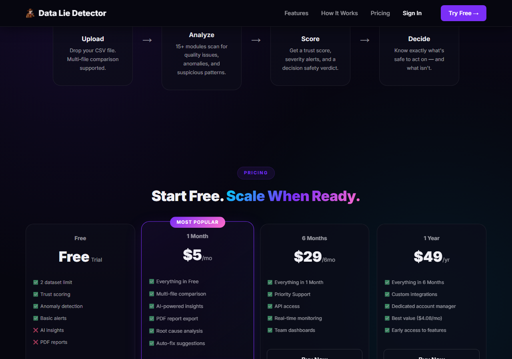

Work
Featured Projects

🚀 Personal Product · Live on Web
Data Lie Detector
Upload any CSV dataset and instantly receive AI-powered trust scores, anomaly detection, suspicious pattern analysis, and decision-safety verdicts. Features a 3-tier alert system, 15+ analysis modules, multi-file comparison, and PDF export — turning opaque data into confident, auditable decisions.

🤖 AutoInsight · Aug 2025
AI BI Copilot — AutoInsight Generator
LLM-powered analytics platform integrating NVIDIA NIM & LangChain across 4 data source types (CSV, SQL Server, MySQL, live Power BI). Non-technical users ask questions in plain English — the engine returns AI-generated charts, insights, and summaries in seconds. Deployed at J&J MedTech, cutting report generation from 3 hours → <2 minutes.
★ CLIENT PROJECT · Mar – Jul 2026
Johnson & Johnson MedTech Dashboards
Built 2 Power BI dashboards (D3&I Resource Management + Product Portfolio) tracking 6 KPI areas: resource capacity, SLA adherence, deployment performance, product health, releases, and budget. Enforced Row-Level Security (RLS) and role-based access controls for enterprise compliance.
★ CLIENT PROJECT · Dec 2025 – Feb 2026
Warner Bros. Discovery — BI Migration
Rebuilt 15+ SAP BusinessObjects reports and 4 dashboards in Power BI with new data models and Power Query transformations. Ran a 3-step validation (SQL profiling → cleansing → row-level reconciliation) achieving zero-defect UAT sign-off and unblocking a coordinated overseas go-live.

📊 Analytics · Power BI
Zomato Sales Analytics Dashboard
Interactive Power BI dashboard analyzing Zomato's sales performance, user behavior, and city-wise trends. Features sales by year, top cities, order categories, and user demographics with gender and age-wise insights for business decision-making.

📊 Analytics · Power BI
OLA Ride Analytics Dashboard
Power BI dashboard analyzing Ola ride data with insights on booking volume, revenue, vehicle types, cancellations, and ratings. Includes booking status breakdown and ride trends over time for data-driven transport insights.

📊 Analytics · Power BI
HR Data Analytics
Dashboard tracking key HR metrics like headcount, attrition rate, gender diversity, and hiring trends. Gain insights into workforce trends to support data-driven HR decisions and enhance organizational efficiency.
🏥
📊 Analytics · Power BI
Healthcare Analytics Dashboard
Power BI dashboard analyzing 9,216 patient visits — demographics, visit timing, wait times, satisfaction scores, and department referrals. Identifies trends across weekdays, quarters, and age groups to support data-driven healthcare operations.